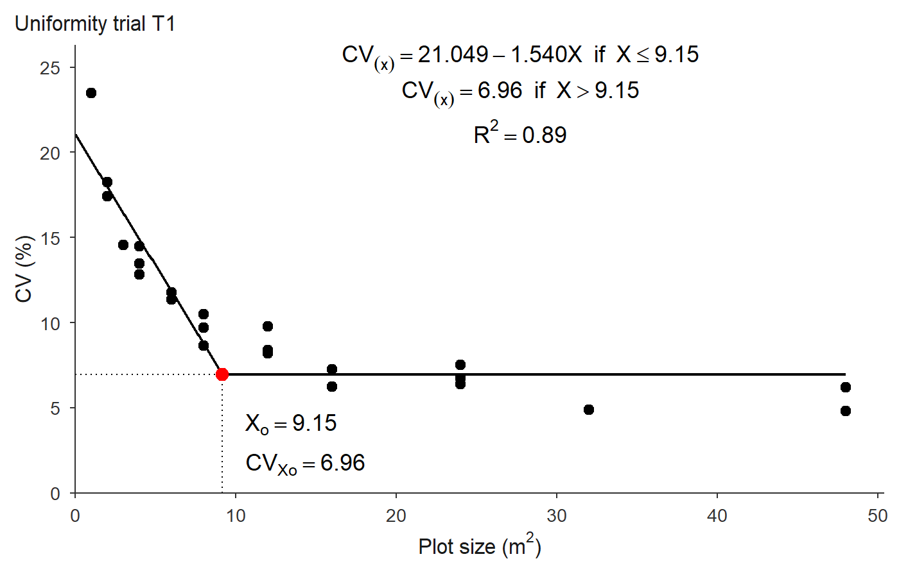

trialSizing provides tools for experimental design sizing in agricultural research: estimating the optimal plot size from a uniformity trial, and the number of replications needed to detect a given difference between treatments. Every method returns standardized diagnostic statistics and publication-style plots that can be saved to TIFF, PDF or PNG.
Cheat sheet
The whole package on one page, laid out in the order you actually use it. Click to open it full size — it is an SVG, so it stays sharp at any zoom and prints on one landscape sheet.
{kind=link}
Installation
You can install the development version of trialSizing from GitHub with:
# install.packages("pak")
pak::pak("willyanjnr/trialSizing")The workflow
A plot-size study starts from a uniformity trial – a field sown uniformly and harvested in a fine grid of small basic experimental units (BEU) – and walks through a fixed sequence of steps. trialSizing has one function for each:
| Step | Question | Function |
|---|---|---|
| 1 | Is the grid usable, and how strong is the spatial structure? | check_trial() |
| 2 | What is the CV of every plot shape the grid allows? | calc_cv_shapes() |
| 3 | At what plot size does the CV stop falling? |
fit_lrp(), fit_qrp(), fit_mcm()
|
| 4 | How do the methods compare (incl. the closed-form Paranaiba)? |
compare_methods(), calc_paranaiba()
|
| 5 | Given that CV, how many replications are needed? | calc_replicates() |
The rest of this page follows those steps on one dataset. Everything below uses uniformity_trial, a simulated trial bundled with the package (three 8 × 12 grids of 1 m² BEU; see ?uniformity_trial).
library(trialSizing)
# One trial, as the numeric grid the functions expect
grid1 <- as.matrix(uniformity_trial[uniformity_trial$trial == "T1",
grep("^col", names(uniformity_trial))])
dim(grid1) # 8 rows x 12 columns of 1 m^2 basic units
#> [1] 8 12Step 1 — Check the trial
Before estimating anything, look at the raw grid: its dimensions decide which plot shapes exist at all, and its spatial autocorrelation is what the whole method rests on. check_trial() reports both, and plot() draws the field map.
chk <- check_trial(grid1)
#> Checking 1 trial(s).
chk
#> Uniformity trial check -- Trial 1
#> Grid: 8 x 12 = 96 basic units, 0 missing
#> Shapes: 23 rectangular plot shapes available
#> Values: mean 251.013, sd 58.922, CV 23.47%, range [114.590, 368.440]
#> Outliers: 0 by the boxplot rule
#> Trend: rows p = 0.387, columns p = 0.0336
#> Moran's I: 0.057 (p = 0.367) rho row 0.059, col 0.104
#> Variogram: gaussian | nugget 3223.678, sill 3715.746, range 9.54
#> nugget/sill 0.87 -> weak spatial dependence
#> little spatial structure: plot size will buy little
#> precision here, whatever method is used
#> Issues: noneStep 2 — CV by plot shape
calc_cv_shapes() groups the BEU into every rectangular plot the grid allows and returns one row per shape: the plot size x (in BEU), the number of plots n of that size, and the coefficient of variation cv among them. Several shapes share the same area, so x repeats.
cv_tab <- calc_cv_shapes(grid1)
#> CV by shape for 1 trial(s).
head(cv_tab)
#> trial X_L X_C x n mean sd cv
#> 1 Trial 1 1 1 1 96 251.0129 58.92214 23.47375
#> 2 Trial 1 1 2 2 48 502.0258 91.52677 18.23149
#> 3 Trial 1 2 1 2 48 502.0258 87.47753 17.42491
#> 4 Trial 1 1 3 3 32 753.0388 109.57170 14.55061
#> 5 Trial 1 1 4 4 24 1004.0517 145.29792 14.47116
#> 6 Trial 1 2 2 4 24 1004.0517 135.13136 13.45861This table is the input the plot-size models expect.
Step 3 — Fit a plot-size model
The CV falls steeply for small plots and then levels off; the plot size where it stops falling is the optimum. fit_lrp() finds it with a Linear Response Plateau model, by a grid search over the breakpoint (no starting values needed).
fit <- fit_lrp(cv_tab, x = "x", cv = "cv", step = 0.05)
#> Using x = 'x', cv = 'cv' (single series).
fit
#> Linear Response Plateau (LRP) fit
#> Method: segment
#> Breakpoint (Xo): 9.150
#> CV at breakpoint: 6.960
#> R2: 0.893 RMSE: 1.513 AIC: 92.3 BIC: 96.9
#>
#> Local minima of the SSE profile (8):
#> Xo = 7.400 SSE +15.3% vs optimum
#> Xo = 12.800 SSE +34.5% vs optimum
#> Xo = 5.750 SSE +50.1% vs optimum
#> ... see $local_minima for allTitle and styling belong to the plot() method, which draws the fitted broken line, the breakpoint and the plateau annotations:
plot(fit, title = "Uniformity trial T1")
plot of chunk fit-plot
To export a figure, use save = TRUE; TIFF is written with LZW compression, and vector formats are available for line art:
plot(fit, title = "Uniformity trial T1",
save = TRUE, file = "trial.tiff", format = "tiff", dpi = 300)Step 4 — Compare methods
The three CV-based models and the closed-form Paranaiba method often give different optima; the plot size typically increases in the order MCM < LRP < QRP. compare_methods() runs them all from a single grid (it builds the CV table on the way, and adds Paranaiba because it has the raw units):
compare_methods(grid1, step = 0.05)
#> Comparing 4 method(s) on 1 trial(s).
#> Plot-size methods compared
#> Trials: 1 | source: raw grid | weighted: FALSE
#>
#> trial method Xo CVxo R2 RMSE
#> Trial 1 MCM 4.495 12.742 0.975 0.725
#> Trial 1 LRP 9.150 6.960 0.893 1.513
#> Trial 1 QRP 11.950 7.028 0.918 1.324
#> Trial 1 Paranaiba 4.794 10.720 NA NA
#>
#> Xo ranges from 4.495 to 11.950 (a factor of 2.7).calc_paranaiba() can also be called on its own; it works directly on the grid and returns a closed-form estimate from the first-order spatial autocorrelation:
calc_paranaiba(grid1)$summary
#> Paranaiba method on 1 trial(s); rho direction = 'row'.
#> trial mean variance CV rho_row rho_col rho Xo
#> 1 Trial 1 251.0129 3471.819 23.47375 0.01655932 0.09052249 0.01655932 4.793933
#> CVxo valid
#> 1 10.71956 TRUEBecause every plot() method returns a ggplot object, several fits can be shown side by side with patchwork:
library(patchwork)
lrp <- fit_lrp(cv_tab, x = "x", cv = "cv", step = 0.05)
qrp <- fit_qrp(cv_tab, x = "x", cv = "cv", step = 0.05)
mcm <- fit_mcm(cv_tab, x = "x", cv = "cv")
plot(mcm, title = "MCM", label_size = 3) +
plot(lrp, title = "LRP", label_size = 3) +
plot(qrp, title = "QRP", label_size = 3)Several trials at once
Pass a data frame (or a list of grids) with a trial column to fit one model per trial. The result carries a per-trial summary table plus the individual fits (this works for fit_lrp(), fit_qrp(), fit_mcm() and compare_methods()):
grids <- lapply(split(uniformity_trial, uniformity_trial$trial),
function(d) as.matrix(d[, grep("^col", names(d))]))
cv_all <- calc_cv_shapes(grids)
#> CV by shape for 3 trial(s).
res <- fit_lrp(cv_all, x = "x", cv = "cv", trial = "trial", step = 0.05)
#> Using x = 'x', cv = 'cv', trial = 'trial' -> 3 trials.
res$summary
#> trial a b breakpoint plateau R2 RMSE AIC BIC
#> 1 T1 21.0495 -1.5398 9.15 6.9602 0.8926 1.5131 92.322 96.864
#> 2 T2 19.3597 -1.0725 14.40 3.9162 0.8341 2.3486 112.547 117.089
#> 3 T3 21.3271 -1.5075 10.10 6.1011 0.8019 2.4138 113.806 118.348
#> n_local
#> 1 8
#> 2 7
#> 3 8Step 5 — Number of replications
The CV at the optimal plot size (CVxo) feeds directly into the number of replications needed to detect a given difference between treatment means (as a percent of the mean), for CRD or RCBD designs:
cvxo <- unname(fit$parameters["Breakpoint_Response"])
reps <- calc_replicates(
treatments = 3:20,
cv_percent = cvxo,
lsd_percent = c(10, 20),
design = "CRD"
)
reps
#> Optimal number of replications
#> Design: CRD CV: 6.96% alpha: 0.05
#> Rows: 36 | Non-converged: 0
#>
#> Treatments CV_percent LSD_percent Alpha Design r_continuous r_optimal df_error
#> 3 6.960245 10 0.05 CRD 6.43 7 18
#> 4 6.960245 10 0.05 CRD 7.32 8 28
#> 5 6.960245 10 0.05 CRD 8.01 9 40
#> 6 6.960245 10 0.05 CRD 8.57 9 48
#> 7 6.960245 10 0.05 CRD 9.06 10 63
#> 8 6.960245 10 0.05 CRD 9.48 10 72
#> q_tukey converged at_floor
#> 3.609 TRUE FALSE
#> 3.861 TRUE FALSE
#> 4.039 TRUE FALSE
#> 4.197 TRUE FALSE
#> 4.307 TRUE FALSE
#> 4.415 TRUE FALSEThe output reports both r_continuous (the tabulated value) and r_optimal (the practical integer, at least 2). Plotting shows how the requirement grows with the number of treatments, one line per LSD level:
plot(reps, title = "Replications needed")
plot of chunk replicates-plot
Where to go next
Each step has a dedicated vignette with the theory and the full set of options: vignette("check_trial"), vignette("cv_shapes"), vignette("lrp"), vignette("qrp"), vignette("mcm"), vignette("paranaiba"), vignette("compare") and vignette("replicates"). The methods are validated against published results in the tests and in vignette("validation").